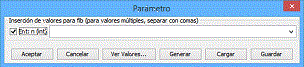

Dependency graph nodes can be moved manually, and existing options on the window allow manual tabulation of the graph or by custom expressions, it also allows configuring zoom level and take snapshots of the graph.

To create a new visualization, the option File / New animation must be selected once is due processed the class to which it belongs. SRec will show a dialog box that will allow to choose a class processed method.
SRec needs the parameters values for running the selected method. SRec also allows multiple values for each parameter, by specifying values separated with commas, or by ranges (x..y), generating multiple visualizations with all possible combinations. SRec allows to generate randomly these values, they also can be stored in the file system for being loaded in a posterior session.
|
SRec allows to hide some of the of the parameters during the visualization. For it, the corresponding box must be not selected in the dialog box where the user indtroduces the parameters values. At least a parameter must remain selected for the visualization. User can modify what parameters are visible and what parameters aren't during the visualization. |
 |
This dialog has a load button and a save button. They allows load almacenated values and save to disk the written values. If when SRec is loading a values file detects a bad file (worng method, wrong type parameters, ...) the aplication launches a error message.
After the values parameters were introduced, SRec runs quickly the method and shows the running trace. At this moment, the visualization is fully generated and it can be used y configurated with freedom.
Also, for each active visualization, a dependency graph can be created to visualize the dependency relation for the different calls of a concrete method
|
Dependency graph nodes can be moved manually, and existing options on the window allow manual tabulation of the graph or by custom expressions, it also allows configuring zoom level and take snapshots of the graph. |
|
__________